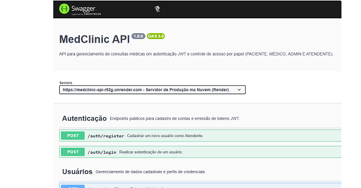
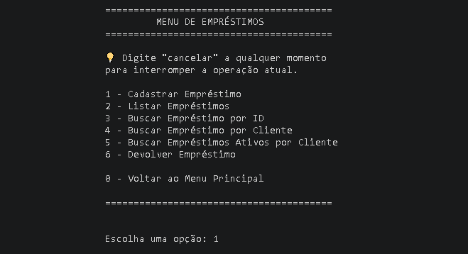
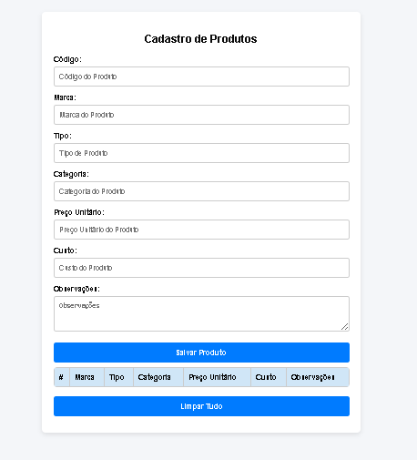

Olá, eu sou
Traduzindo sonhos para a linguagem de máquina.
Sou desenvolvedora backend júnior, com foco em Node.js e TypeScript, em busca da minha primeira oportunidade na área. Gosto de construir APIs REST com regras de negócio bem definidas, autenticação, testes e documentação.
Meu projeto mais recente é a MedClinic API (Express, TypeORM e PostgreSQL) com autenticação JWT, controle de acesso por perfis, testes em Jest e documentação com Swagger. O código será aberto após a avaliação do meu curso no SENAI/SC.
Antes da TI, atuei por mais de 10 anos em gestão administrativa e perícia grafotécnica. Dessa trajetória trago rigor com regras de negócio, atenção a detalhes e o hábito de documentar e justificar decisões.
Também programei em Python, Flask, MySQL e automações e tenho interesse em IA aplicada ao desenvolvimento de soluções reais. Estudo inglês de forma contínua.

API REST para gestão de agendas e consultas de clínicas, com autenticação JWT, controle de acesso por perfis, testes em Jest e documentação com Swagger. Projeto do curso de Back-end (SENAI/SC)
Ver projeto
Sistema de gerenciamento de biblioteca em terminal,com arquitetura em camadas, 7 tabelas relacionadas e regras de negócio de empréstimo (limite de 3 ativos, bloqueio por atraso).
Ver projeto
Automação que lê produtos de um arquivo CSV e preenche o formulário de cadastro automaticamente, para otimizar tarefas repetitivas.
Ver projetoAplicação web que usa a API Gemini (LLM) para responder perguntas sobre futebol, basquete e poker, com respostas formatadas em Markdown e interface responsiva. O usuário informa a própria chave da API, usada apenas no navegador.
Ver projetoTecnologias que uso nos meus projetos e habilidades que trago da minha trajetória anterior
Em busca da minha primeira oportunidade como Desenvolvedora Backend Júnior, em Florianópolis ou remoto. Fale comigo pelos canais abaixo.
Disponível para oportunidades remotas.